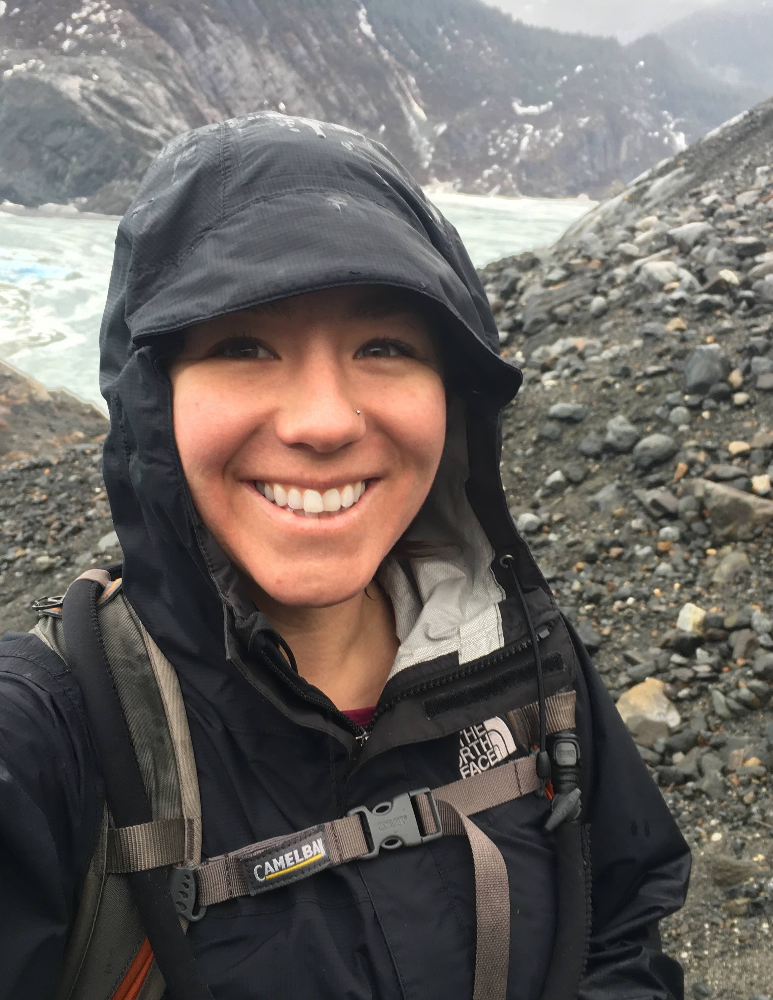

I am most interested in identifying scientific questions and facilitating research that will inform marine resource management. I value collaboration among academic and agency scientists, resource managers, fishery stakeholders, and students because of its benefit to both process and product.
Much of my work focuses on better understanding population and community dynamics of groundfishes in the North Pacific. Specifically, I evaluate impacts of fishing and climate on nearshore fish assemblages, quantify spatiotemporal variation in food web dynamics (i.e., competition and predation), and assess biogeographic effects on a variety of life history traits. Most recently, I compared species distribution models with varying degrees of complexity to understand near-term forecast skill in high latitude systems.
Common themes that I integrate into my work include:
— evaluating effects of scale on ecological inferences,
— enhancing scientific lessons through cross-regional comparisons, and
— using multiple metrics to improve our understanding about processes of interest.

CURRENT AFFILIATIONS PAST AFFILIATIONS
ACLIM /
GOACLIM Projects
Marine Conservation and Ecology Group – SAFS, UW
Status of Stocks and Multispecies Assessment – NOAA
Resource Ecology and Ecosystem Modeling – NOAA
Thorson Lab (HEPR Program) – AFSC, NOAA
Habitat Conservation Division – AKRO, NOAA
Coastal Fisheries Ecology Lab – CFOS, UAF
California Sea Grant Extension Program
CA Collaborative Fisheries Research Program
Fisheries and Conservation Biology Lab, MLML
Please click here for a Diversity, Equity, and Inclusion Statement and here for a Code of Conduct that I helped create through different collaborative processes. I emphasize the ideas, values, and strategies identified therein in all aspects of my work.